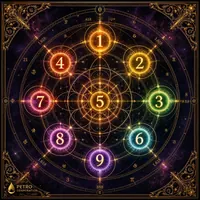
Divinazione · Guide
Storia dei Tarocchi: Dalle Corti Rinascimentali all'Oracolo Moderno
Dalle origini come gioco di carte nelle corti del XV secolo fino all'oracolo che milioni di persone usano oggi per la lettura dell'anima. Un viaggio attraverso cinque secoli di simbolismo, esoterismo e trasformazione culturale.
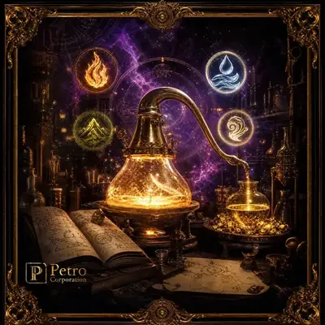
Divinazione
Rune: L'Alfabeto Sacro dei Popoli Nordici
Il Futhark Antico, i 24 simboli, le tre Ætt. Origini, significati e uso divinatorio delle rune dalla tradizione germanica al mondo moderno.
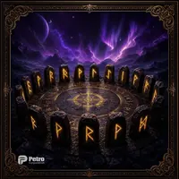
Divinazione · Spiritualità
I Ching: Il Libro dei Mutamenti nella Filosofia Cinese
3000 anni di saggezza condensati in 64 esagrammi. Come funziona, da dove viene e perché il Libro dei Mutamenti è ancora la guida più profonda per navigare il cambiamento.
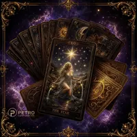
Astrologia
Astrologia: La Mappa Celeste della Tua Anima
Dal tema natale ai transiti planetari: come leggere il cielo, cosa significano i 12 segni, le case e gli aspetti. Una guida completa all'astrologia moderna.
Divinazione · Spiritualità
Numerologia: Il Codice Vibratorio dell'Anima
Il numero del destino, il numero dell'anima, il numero della personalità. Come la numerologia pitagorica legge la tua vita attraverso i numeri della data di nascita e del nome.
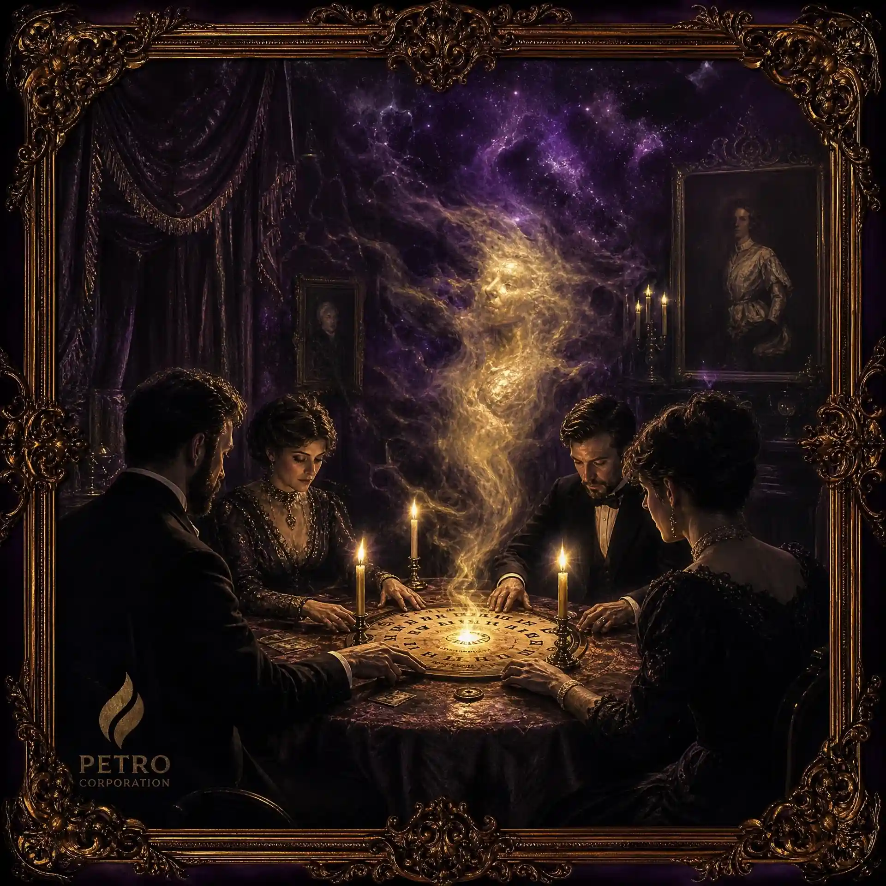
Spiritualità · Magia
Cabala: L'Albero della Vita e i Segreti della Torah
Le dieci Sefirot, i 22 sentieri, lo Zohar. La mistica ebraica dal Medioevo al misticismo cristiano e all'ermetismo moderno.
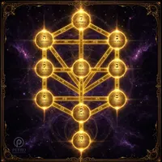
Magia · Storia
Alchimia: La Grande Opera tra Scienza e Mistica
Nigredo, Albedo, Citrinitas, Rubedo. Le quattro fasi della trasformazione alchemica e il significato simbolico della pietra filosofale.
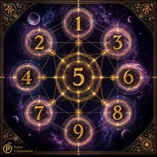
Magia · Spiritualità
Wicca e Stregoneria Moderna: La Ruota dell'Anno
Gli otto Sabbat, la Triplice Dea, il Dio Cornuto. Come funziona la Wicca, da Gerald Gardner alle pratiche contemporanee.
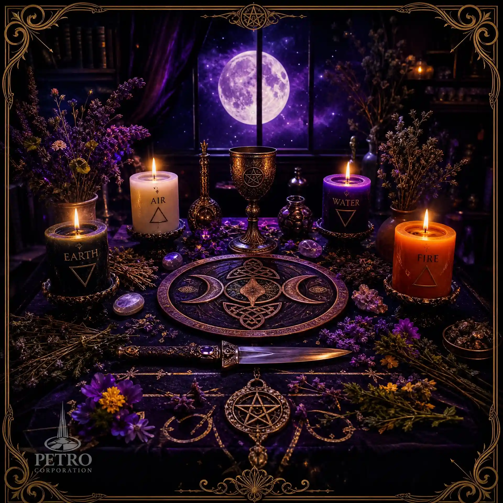
Spiritualità
Chakra e Kundalini: Il Sistema Energetico del Corpo Sottile
I sette chakra principali, dalla radice alla corona. Come riconoscere blocchi energetici e pratiche per il riequilibrio.
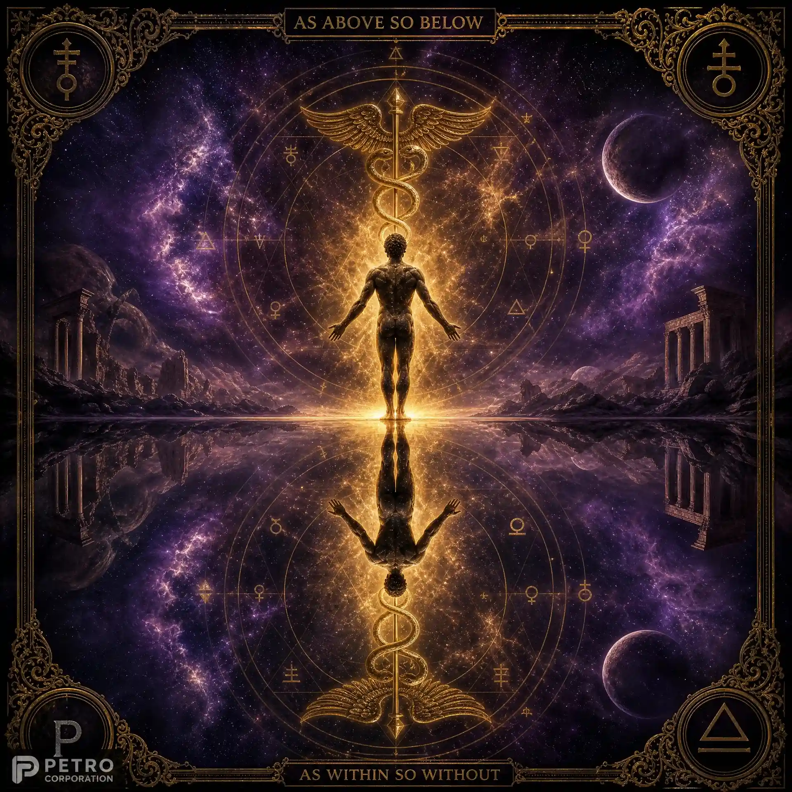
Divinazione · Sogni
Oniromanzia: L'Arte di Interpretare i Sogni
Da Artemidoro a Jung: come i sogni parlano dell'inconscio. Simboli onirici universali, sogni lucidi e il metodo per tenere un diario dei sogni.
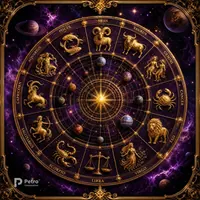
Magia
Magia Cerimoniale: Simboli, Rituali e Trasformazione
Dalla Golden Dawn a Aleister Crowley: la struttura del rituale magico, il ruolo dei simboli, il cerchio magico e la volontà come strumento di trasformazione.
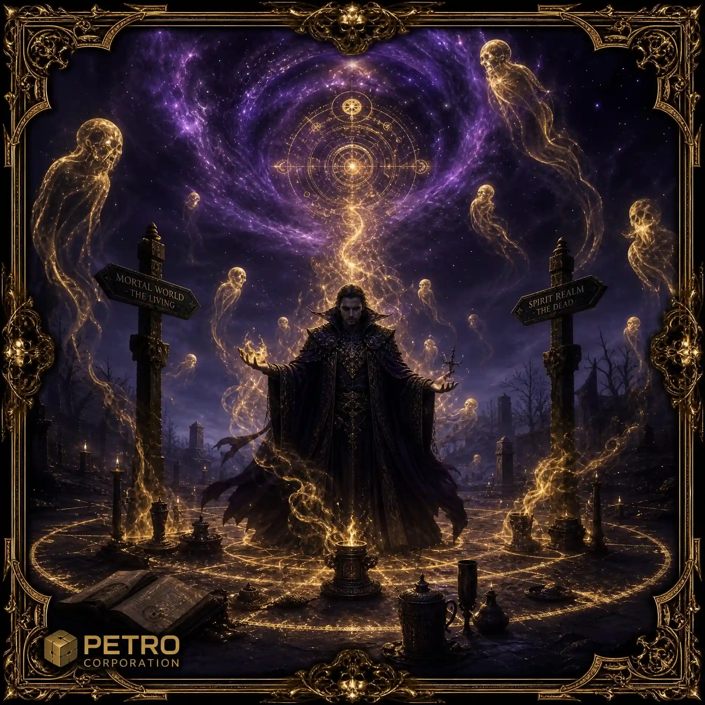
Spiritualità · Sciamanesimo
Animali Totem: Guide Spirituali nelle Tradizioni Sciamaniche
Lo sciamanesimo siberiano, i medicine animals dei nativi americani, il dreamtime aborigeno. Come trovare e lavorare con il proprio animale guida.

Magia · Sigilli
I 44 Pentacoli di Re Salomone: Sigilli di Potere Planetario
I sigilli magici della Chiave di Salomone: storia, significati e funzioni di ciascun pentacolo nei sette pianeti dell'astrologia tradizionale.
✦ Guide Pratiche